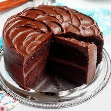

Chocolate Cake

This homemade chocolate cake recipe has been in the family for generations.
With a super moist crumb, yet light texture, this will be your favorite cake to bake! Top with chocolate buttercream and chocolate chips for the ut-most chocolate experience.
Ingredients
Cake
- 1 3/4 cups all-purpose flour
- 3/4 cup unsweetened natural cocoa powder
1 and 3/4 cups granulated sugar
- 2 teaspoons baking soda
- 1 teaspoon baking powder
- 1 teaspoon salt
- 2 teaspoons espresso powder
- 1/2 cup vegetable oil
- 2 large eggs(room temp)
- 1 cup freshly brewed hot coffee
Chocolate Buttercream
- 1 and 1/4 cups unsalted butter
- 3 and 1.2 cups confectioners sugar
- 3/4 cup unsweetened cocoa powder
- 3-5 Tablespoons heavy cream
- 1/4 teaspoon salt
- 1 teaspoon pure vanilla extract
- Optional for decoration: Semi-sweet chocolate chips
Steps
- Preheat oven to 350°F (177°C). Grease two 9-inch cake pans, line with parchment paper rounds, then grease the parchment paper. Parchment paper helps the cakes seamlessly release from the pans.
- Make the cake: Whisk the flour, cocoa powder, sugar, baking soda, baking powder, salt, and espresso powder (if using) together in a large bowl. Set aside. Using a handheld or stand mixer fitted with a whisk attachment (or you can use a whisk) mix the oil, eggs, and vanilla together on medium-high speed until combined. Add the buttermilk and mix until combined. Pour the wet ingredients into the dry ingredients, add the hot water/coffee, and whisk or beat on low speed until the batter is completely combined.
- Divide batter evenly between pans. Bake for 23-26 minutes or until a toothpick inserted in the center comes out clean.
- Remove the cakes from the oven and set on a wire rack. Allow to cool completely.
- Make the buttercream: With a handheld or stand mixer fitted with a paddle attachment, beat the butter on medium speed until creamy – about 2 minutes. Add confectioners’ sugar, cocoa powder, 3 Tablespoons heavy cream, salt, and vanilla extract. Beat on low speed for 30 seconds, then increase to high speed and beat for 1 full minute. Do not over-whip. Add 1/4 cup more confectioners’ sugar or cocoa powder if frosting is too thin or 1-2 more Tablespoons of cream if frosting is too thick.
- Assemble and frost: If cooled cakes are domed on top, use a large serrated knife to slice a thin layer off the tops to create a flat surface. This is called “leveling” the cakes. Discard or crumble over finished cake. Place 1 cake layer on your cake stand or serving plate. Evenly cover the top with frosting. Top with 2nd layer and spread remaining frosting all over the top and sides.
- Garnish with chocolate chips if desired.